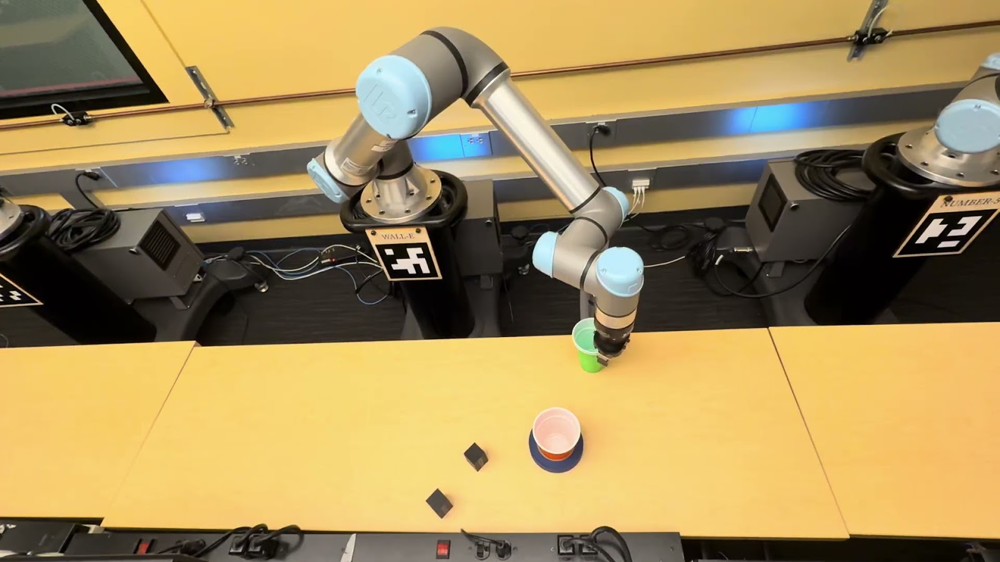

ROBOTICS / UC BERKELEY Watch demoHECTUR Head & eye control for UR7eControl through a different lens.
Hands-free robotic control using facial tracking, ROS 2, and MoveIt. I contributed the concept, early FaceMesh prototype, inverse-kinematics planning, and the live presentation.